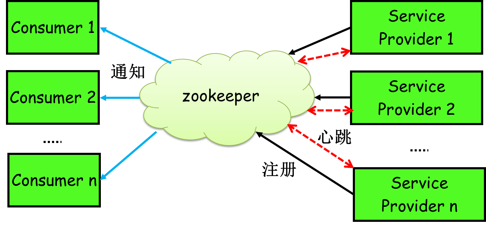

Zookeeper原理分析
一、介绍
ZK理解
ZooKeeper是面向分布式应用程序的分布式开源协调服务。它公开了一组简单的基元，分布式应用程序可以基于这些基元来实现更高级别的服务，以实现同步，配置维护以及组和命名。它被设计为易于编程，并且使用在文件系统熟悉的目录树结构之后的样式的数据模型。它运行在Java中，并具有Java和C的绑定。
协调服务是非常难以正确的。他们特别容易出现诸如竞赛状况和僵局等错误。ZooKeeper背后的动机是为分散的应用程序减轻从零开始实施协调服务的责任。
其实Zookeeper就是一个分布式文件系统，每当一个服务提供者部署后都要将自己的服务注册到zookeeper的某一路径上: /{service}/{version}/{ip:port}，比如我们的HelloWorldService部署到两台机器，那么zookeeper上就会创建两条目录：分别为
/HelloWorldService/1.0.0/100.19.20.01:16888
/HelloWorldService/1.0.0/100.19.20.02:16888。
ZK产生背景
项目从单体到分布式转变之后，将会产生多个节点之间协同的问题。如：
每天的定时任务由谁哪个节点来执行？如elatic-job
RPC调用时的服务如何做注册和发现?
如何保证并发请求的幂等?如分布式锁
...
这些问题可以统一归纳为多节点协调问题，如果靠节点自身进行协调这是非常不可靠的，性能上也不可取。必须由一个独立的服务做协调工作，它必须可靠，而且保证性能。
zookeeper未使用前,如何发布自己的服务？
如果你发现你的服务一台机器不够，要再添加一台，这个时候就要告诉调用者我现在有两个ip了，要轮询调用来实现负载均衡；结果某天一台机器挂了，调用者发现服务有一半不可用，只能手动修改代码来删除挂掉那台机器的ip。现实生产环境当然不会使用人肉方式。
思考：有没有一种方法能实现自动告知，即机器的增添、剔除对调用方透明，调用者不再需要写死服务提供方地址？
当然可以，现如今zookeeper被广泛用于实现服务自动注册与发现功能！
使用zookeeper后，架构可演变成这样：

ZooKeeper的应用场景
分布式锁：利用Zookeeper的临时顺序节点，可以轻松实现分布式锁。
服务注册和发现利：用Znode和Watcher，可以实现分布式服务的注册和发现。 比如：最著名的应用就是阿里的分布式RPC框架Dubbo，以及分布式配置中心disconf等。
共享配置和状态信息Redis的分布式解决方案Codis：就利用了Zookeeper来存放数据路由表和 codis-proxy 节点的元信息。同时 codis-config 发起的命令都会通过 ZooKeeper 同步到各个存活的 codis-proxy。
ZK与Eureka区别（面试常问）
ZK：CP设计(强一致性)，目标是一个分布式的协调系统，用于进行资源的统一管理。当主节点crash后，需要进行leader的选举，在这个期间内，zk服务是不可用的（当然消费者可以缓存zk上注册的节点），并且在写数据时，同步到从节点阶段也是不可用的。
Eureka：AP设计（高可用），目标是一个服务注册发现系统，专门用于微服务的服务发现注册。Eureka各个节点都是平等的，不是主从架构。几个节点挂掉不会影响正常节点的工作，剩余的节点依然可以提供注册和查询服务。而Eureka的客户端在向某个Eureka注册时如果发现连接失败，会自动切换至其他节点，只 要有一台Eureka还在，就能保证注册服务可用（保证可用性），只不过查到的节点信息可能不是最新的（不保证强一致性）同时当eureka的服务端发现85%以上的服务都没有心跳的话，它就会认为自己的网络出了问题，就不会从服务列表中删除这些失去心跳的服务，同时eureka的客户端也会缓存服务信息。eureka对于服务注册发现来说是非常好的选择。
二、zk架构原理
集群架构和ZAB协议
Zookeeper Service集群是一主多从结构：

在更新数据时，首先更新到主节点（这里的节点是指服务器，不是ZNode），再同步到从节点，要等从节点至少一半返回成功后，才更新完成。可见zk是牺牲了可用性而保证强一致性的。
在读取数据时，直接读取任意从节点。
为了保证主从节点的数据一致性，Zookeeper采用了ZAB协议，这种协议非常类似于一致性算法Paxos和Raft。
拜占庭将军问题：在很久很久以前，拜占庭是东罗马帝国的首都。那个时候罗马帝国国土辽阔，为了防御目的，因此每个军队都分隔很远，将军与将军之间只能靠信使传递消息。
在打仗的时候，拜占庭军队内所有将军必需达成一致的共识，才能更好地赢得胜利。但是，在军队内有可能存有叛徒，扰乱将军们的决定。这时候，在已知有成员不可靠的情况下，其余忠诚的将军需要在不受叛徒或间谍的影响下达成一致的协议。
莱斯利·兰伯特（ Leslie Lamport ）通过这个比喻，表达了计算机网络中所存在的一致性问题。这个问题被称为拜占庭将军问题。
ZAB 协议
Zab协议的全称是 Zookeeper Atomic Broadcast （Zookeeper原子广播)，为分布式协调服务 ZooKeeper 专门设计的一种支持崩溃恢复的原子广播协议和实现主从同步需遵守的协议。
ZAB协议所定义的三种节点状态：
Looking ：选举状态。
Following ：Follower节点（从节点）所处的状态。
Leading ：Leader节点（主节点）所处状态。
最大ZXID的概念：最大ZXID也就是节点本地的最新事务编号，包含epoch和计数两部分。epoch是纪元的意思，相当于Raft算法选主时候的term。
背景：假如Zookeeper当前的主节点挂掉了，集群会进行崩溃恢复。ZAB的崩溃恢复分成三个阶段：
Leader election：选举阶段。
此时集群中的节点处于Looking状态。它们会各自向其他节点发起投票，投票当中包含自己的服务器ID和最新事务ID（ZXID）。
接下来，节点会用自身的ZXID和接收到其他节点的ZXID做比较，如果发现别人家的ZXID比自己大（比自己新），那么就重新发起投票，投票给目前已知最大的ZXID所属节点。
每次投票后，服务器都会统计投票数量，判断是否有某个节点得到半数以上的投票。如果存在这样的节点，该节点将会成为准Leader，状态变为Leading。其他节点的状态变为Following。
即选取最大的ZXID的节点。如果存在这样的节点，该节点将会成为准Leader，状态变为Leading。其他节点的状态变为Following。
Discovery：发现阶段，用于在从节点中发现最新的ZXID和事务日志。
思考：既然Leader被选为主节点，已经是集群里数据最新的了，为什么还要从节点中寻找最新事务呢？
回答：这是为了防止某些意外情况，比如因网络原因在上一阶段产生多个Leader的情况。
所以这一阶段，Leader集思广益，接收所有Follower发来各自的最新epoch值。Leader从中选出最大的epoch，基于此值加1，生成新的epoch分发给各个Follower。
各个Follower收到全新的epoch后，返回ACK给Leader，带上各自最大的ZXID和历史事务日志。Leader选出最大的ZXID，如果比自己还大，则更新自身历史日志。这是为了防止某些意外情况，比如因网络原因在上一阶段产生多个Leader的情况（脑裂）。
即再一次确认是否还有更大的ZXID的节点，并获取历史事务日志。
Synchronization：同步阶段，把Leader刚才收集得到的最新历史事务日志，同步给集群中所有的Follower。
只有当半数Follower同步成功，这个准Leader才能成为正式的Leader。完成故障恢复。
注意：ZK在zab协议恢复完成之前，zk集群是无法用的，即牺牲了可用性保证数据一致性。
ZK node存储模型
ZK的数据模型
Zookeeper的数据模型是什么样子呢？它很像数据结构当中的树，也很像文件系统的目录。
与Linux文件系统不同的是，Linux文件系统有目录和文件的区别，而Zookeeper的数据节点称为ZNode，ZNode是Zookeeper中数据的最小单元，每个ZNode都可以保存数据，同时还可以挂载子节点，因此构成了一个层次化的命名空间，称为树。
Znode数据结构如下：
data：Znode存储的数据信息。
ACL：记录Znode的访问权限，即哪些人或哪些IP可以访问本节点。
stat：包含Znode的各种元数据，比如事务ID、版本号、时间戳、大小等等。
child：当前节点的子节点引用，类似于二叉树的左孩子右孩子。
注意：Zookeeper是为读多写少的场景所设计。Znode并不是用来存储大规模业务数据，而是用于存储少量的状态和配置信息，每个节点的数据最大不能超过1MB。
Znode节点四种类型
持久节点（PERSISTENT）：默认的节点类型。创建节点的客户端与zookeeper断开连接后，该节点依旧存在 。
持久节点顺序节点（PERSISTENT_SEQUENTIAL）：所谓顺序节点，就是在创建节点时，Zookeeper根据创建的时间顺序给该节点名称进行编号。
临时节点（EPHEMERAL）： 和持久节点相反，当创建节点的客户端与zookeeper断开连接后，临时节点会被删除
临时顺序节点（EPHEMERAL_SEQUENTIAL）： 临时顺序节点结合和临时节点和顺序节点的特点：在创建节点时，Zookeeper根据创建的时间顺序给该节点名称进行编号；当创建节点的客户端与zookeeper断开连接后，临时节点会被删除。
ZK的watch机制
ZK的可以理解成是注册在特定Znode上的触发器（观察者模式），当这个Znode发生改变，也就是调用了create，delete，setData方法的时候，将会触发Znode上注册的对应事件，请求Watch的客户端会接收到异步通知。
一次性：一旦被触发就会移除，再次使用需要重新注册，因为每次变动都需要通知所有客户端，一次性可以减轻压力，3.6.0版本默认持久递归，可以触发多次。
轻量：只通知发生了事件，不会告知事件内容，减轻服务器和带宽压力。
watch机制具体交互过程如下：
客户端调用getData方法，watch参数是true。服务端接到请求，返回节点数据，并且在对应的哈希表里插入被Watch的Znode路径（key），以及Watcher列表(value)。
当被Watch的Znode已删除，服务端会查找哈希表，找到该Znode对应的所有Watcher，异步通知客户端，并且删除哈希表中对应的Key-Value。
Watcher机制包括三个角色：客户端线程、客户端的 WatchManager以及ZooKeeper服务器：
客户端向 ZooKeeper 服务器注册一个 Watcher 监听；
把这个监听信息存储到客户端的 WatchManager 中；
当 ZooKeeper 中的节点发生变化时，会通知客户端，客户端会 在WatchManager中调用相应 Watcher 对象中的回调方法。watch回调是串行同步的。
zk的watch机制实现原理
11new ZooKeeper(String connectString, int sessionTimeout, Watcher watcher)
这个Watcher将作为整个ZooKeeper会话期间的上下文，一直被保存在客户端ZKWatchManager的 defaultWatcher。也可以动态添加watcher：getData(),exists,getChildren。
实现思想是分布式环境下的观察者模式：通过客服端和服务端分别创建有观察者的信息列表。
客户端调用相应接口时，首先将对应的 Watch 事件放到本地的 ZKWatchManager 中进行管理。
服务端在接收到客户端的请求后根据请求类型判断是否含有 Watch 事件，并将对应事件放到 WatchManager 中进行管理。
在事件触发的时候服务端通过节点的路径信息查询相应的 Watch 事件通知给客户端，客户端在接收到通知后，首先查询本地的ZKWatchManager 获得对应的 Watch 信息处理回调操作。
优点：这种设计不但实现了一个分布式环境下的观察者模式，而且通过将客户端和服务端各自处理 Watch 事件所需要的额外信息分别保存在两端，减少彼此通信的内容。大大提升了服务的处理性能。
客户端实现过程：
标记该会话是一个带有Watch事件的请求。
通过DataWatchRegistration类来保存watcher事件和节点的对应关系。
客户端向服务器发送请求，将请求封装成一个Packet对象，并添加到一个等待发送队列outgoingQueue 中。
调用负责处理队列outgoingQueue的SendThread线程类中的readResponse方法接收服务端的回调，并在最后执行 finishPacket（）方法将 Watch 注册到 ZKWatchManager，sendThread 通 过发送 path 路径和 watcher 为 true ，到 server 注册 watch 事件。
客户端ZKWatchManager保存了 Map<String,Set> dataWatchers、Map<String,Set> existsWatchers、 Map<String,Set> childrenWatchers 三个集合，客户端会在 dataWatchers 中会添加一个 key 为path 路径的本地事件。
服务端实现过程：
解析收到的请求是否带有Watch注册事件，通过FinalRequestProcessor 类中的 processRequest函数实现的。当 getDataRequest.getWatch() 值为 True 时，表明该请求需要进行 Watch 监控注册。
将对应的Watch事件存储到WatchManager，通过zks.getZKDatabase().getData 函数实现， WatchManger 该类中有 HashMap<String,HashSet> watchTable ，key为path ， Watcher是一个客户端网络连接封装，当节点变化时会通知对应的连接（连接通过心跳保持）。
服务端触发过程：
调用WatchManager中的方法触发数据变更事件。
封装了一个具有会话状态、事件类型、数据节点 3 种属性的 WatchedEvent 对象。之后查询该节点注册的 Watch 事件，如果为空说明该节点没有注册过 Watch 事件。 如果存在 Watch 事件则添加到定义的 Wathcers 集合中，并在 WatchManager 管理中删除。
最后，通过调用 process 方法向客户端发送通知。
客户端回调过程：
使用 SendThread.readResponse() 方法来统一处理服务端的响应。
将收到的字节流反序列化转换成 WatcherEvent 对象。调用 eventThread.queueEvent( ）方法将接收到的事件交给 EventThread 线程进行处理。
从 ZKWatchManager 中查询注册过的客户端 Watch 信息。查询到后，会将其从ZKWatchManager 的管理中删除。 因此客户端的 Watcher 机制是一次性的，触发后就会被删除。
将查询到的 Watcher 存储到 waitingEvents 队列中，调用 EventThread 类中的 run 方法循环取出在 waitingEvents 队列中等待的 Watcher 事件进行处理。

ZK数据一致性原理
ZNode在写入数据时，处于Broadcast阶段，其原理使用的是分布式事务中2pc提交。
什么是Broadcast呢？简单来说，就是Zookeeper常规情况下更新数据的时候，由Leader广播到所有的Follower。其过程如下：
客户端发出写入数据请求给任意Follower。
Follower把写入数据请求转发给Leader。
Leader采用二阶段提交方式，先发送Propose广播给Follower。
Follower接到Propose消息，写入日志成功后，返回ACK消息给Leader。
Leader接到半数以上ACK消息，返回成功给客户端，并且广播Commit请求给Follower。
ZK脑裂
脑裂(split-brain)就是“大脑分裂”，也就是本来一个“大脑”被拆分了两个或多个“大脑”，在集群中出现了多个Leader。
脑裂通常会出现在集群环境中，比如ElasticSearch、Zookeeper集群，而这些集群环境有一个统一的特点，就是它们有一个大脑，比如ElasticSearch集群中有Master节点，Zookeeper集群中有Leader节点。
产生脑裂场景
对于一个集群，想要提高这个集群的可用性，通常会采用多机房部署，比如现在有一个由6台zkServer所组成的一个集群，部署在了两个机房：
正常情况下，此集群只会有一个Leader，那么如果机房之间的网络断了之后，两个机房内的zkServer还是可以相互通信的，如果不考虑过半机制，那么就会出现每个机房内部都将选出一个Leader。
这就相当于原本一个集群，被分成了两个集群，出现了两个“大脑”，这就是脑裂。
对于这种情况，我们也可以看出来，原本应该是统一的一个集群对外提供服务的，现在变成了两个集群同时对外提供服务，如果过了一会，断了的网络突然联通了，那么此时就会出现问题了，两个集群刚刚都对外提供服务了，数据该怎么合并，数据冲突怎么解决等等问题。
刚刚在说明脑裂场景时，有一个前提条件就是没有考虑过半机制，所以实际上Zookeeper集群中是不会出现脑裂问题的，而不会出现的原因就跟过半机制有关。
脑裂产生原因
对于Zookeeper来说有一个很重要的问题，就是到底是根据一个什么样的情况来判断一个节点死亡down掉了。 在分布式系统中这些都是有监控者来判断的，但是监控者也很难判定其他的节点的状态，唯一一个可靠的途径就是心跳，Zookeeper也是使用心跳来判断客户端是否仍然活着。
使用ZooKeeper来做Leader，HA基本都是同样的方式：每个节点都尝试注册一个象征Leader的临时节点，其他没有注册成功的则成为follower，并且通过watch机制监控着leader所创建的临时节点，Zookeeper通过内部心跳机制来确定leader的状态，一旦leader出现意外Zookeeper能很快获悉并且通知其他的follower，其他flower在之后作出相关反应，这样就完成了一个切换，这种模式也是比较通用的模式，基本大部分都是这样实现的。
但是这里面有个很严重的问题，如果注意不到会导致短暂的时间内系统出现脑裂，因为心跳出现超时可能是leader挂了，但是也可能是Zookeeper节点之间网络出现了问题，导致leader假死的情况，leader其实并未死掉，但是与ZooKeeper之间的网络出现问题导致Zookeeper认为其挂掉了然后通知其他节点进行切换，这样follower中就有一个成为了leader，但是原本的leader并未死掉，这时候client也获得leader切换的消息，但是仍然会有一些延时，zookeeper需要通讯需要一个一个通知，这时候整个系统就很混乱，可能有一部分client已经通知到了连接到新的leader上去了，有的client仍然连接在老的leader上，如果同时有两个client需要对leader的同一个数据更新，并且刚好这两个client此刻分别连接在新老的leader上，就会出现很严重问题。
产生脑裂的主要原因：
假死：由于心跳超时（网络原因导致的）认为leader死了，但其实leader还存活着。
脑裂：由于假死会发起新的leader选举，选举出一个新的leader，但旧的leader网络又通了，导致出现了两个leader，有的客户端连接到老的leader，而有的客户端则连接到新的leader。
过半机制解决Zookeeper集群中的脑裂问题
在Leader选举的过程中，如果某台zkServer获得了超过半数的选票，则此zkServer就可以成为Leader了。
201// 过半机制源码2
3public class QuorumMaj implements QuorumVerifier {4 private static final Logger LOG = LoggerFactory.getLogger(QuorumMaj.class);5 6 int half;7 8 // n表示集群中zkServer的个数（准确的说是参与者的个数，参与者不包括观察者节点）9 public QuorumMaj(int n){10 this.half = n/2;11 }12 13 // 验证是否符合过半机制14 public boolean containsQuorum(Set<Long> set){15 // half是在构造方法里赋值的16 // set.size()表示某台zkServer获得的票数17 return (set.size() > half);18 }19 20}
举个简单的例子：如果现在集群中有5台zkServer，那么half=5/2=2，那么也就是说，Leader选举的过程中至少要有三台zkServer投了同一个zkServer，才会符合过半机制，才能选出来一个Leader。
思考：那么有一个问题我们想一下，选举的过程中为什么一定要有一个过半机制验证？
回答：因为这样不需要等待所有zkServer都投了同一个zkServer就可以选举出来一个Leader了，这样比较快，所以叫快速领导者选举算法呗。
思考2：那么再来想一个问题，过半机制中为什么是大于，而不是大于等于呢？
回答：这就是更脑裂问题有关系了，比如回到上文出现脑裂问题的场景：2个机房之间的网络中断了，机房1内的三台服务器会进行领导者选举，但是此时过半机制的条件是set.size() > 3，也就是说至少要4台zkServer才能选出来一个Leader，所以对于机房1来说它不能选出一个Leader，同样机房2也不能选出一个Leader，这种情况下整个集群当机房间的网络断掉后，整个集群将没有Leader。而如果过半机制的条件是set.size() >= 3，那么机房1和机房2都会选出一个Leader，这样就出现了脑裂。所以我们就知道了，为什么过半机制中是大于，而不是大于等于。就是为了防止脑裂。
问题1：Zookeeper集群节点为什么要部署成奇数？
回答：
过半机制防止脑裂问题的原因，如果为偶数可能导致选举不出leader；
资源节约角度，zookeeper容错指的是：当宕掉几个zookeeper节点服务器之后，剩下的个数必须大于宕掉的个数，也就是剩下的节点服务数必须大于n/2，这样zookeeper集群才可以继续使用，无论奇偶数都可以选举leader。例如5台zookeeper节点机器最多宕掉2台，还可以继续使用，因为剩下3台大于5/2。那么为什么最好为奇数个节点呢？是在以最大容错服务器个数的条件下，会节省资源。比如，最大容错为2的情况下，对应的zookeeper服务数，奇数为5，而偶数为6，也就是6个zookeeper服务的情况下最多能宕掉2个服务，所以从节约资源的角度看，没必要部署6（偶数）个zookeeper服务节点。
zookeeper集群有这样一个特性：集群中只要有过半的机器是正常工作的，那么整个集群对外就是可用的。也就是说如果有2个zookeeper节点，那么只要有1个zookeeper节点死了，那么zookeeper服务就不能用了，因为1没有过半，所以2个zookeeper的死亡容忍度为0；同理，要是有3个zookeeper，一个死了，还剩下2个正常的，过半了，所以3个zookeeper的容忍度为1；同理也可以多列举几个：2->0;3->1;4->1;5->2;6->2就会发现一个规律，2n和2n-1的容忍度是一样的，都是n-1，所以为了更加高效，何必增加那一个不必要的zookeeper呢。
根据以上可以得出结论：从资源节省的角度来考虑，zookeeper集群的节点最好要部署成奇数个！
三、ZK客户端
客户端与一个单独的服务器建立连接。它们之间通过发送请求、获得回复，获得观察事件和发送心跳来维持一个TCP连接。如果客户端与服务器的TCP连接断开了，那么客户端会去连接另一个服务器。
心跳检测机制
zookeeper提供了“心跳检测”功能，它会定时向各个服务提供者发送一个请求（实际上建立的是一个Socket长连接），如果长期没有响应，服务中心就认为该服务提供者已经“挂了”，并将其剔除，比如100.19.20.02这台机器如果宕机了，那么zookeeper上的路径就会只剩/HelloWorldService/1.0.0/100.19.20.01:16888。
实质就是一个调度线程定时检查连接是否断开。
ZKClient
ZkClient是Github上一个开源的Zookeeper客户端，是由Datameer的工程师Stefan Groschupf和Peter Voss一起开发的。ZkClient在Zookeeper原生API接口之上进行了包装，是一个更易用的Zookeeper客户端。
同时ZkClient在内部实现了诸如Session超时重连，Watcher反复注册等功能。使得Zookeeper客户端这些繁琐的细节工作对开发人员透明。
四、ZK典型应用架构和原理
Zookeeper实现分布式锁
Zookeeper分布式锁主要应用了到了zk的临时顺序节点和watch机制特性。
获取锁：
首先，在Zookeeper当中创建一个持久节点ParentLock。当第一个客户端想要获得锁时，需要在ParentLock这个节点下面创建一个临时顺序节点 Lock1。
2. 之后，Client1查找ParentLock下面所有的临时顺序节点并排序，判断自己所创建的节点Lock1是不是顺序最靠前的一个。如果是第一个节点，则成功获得锁。
3. 这时候，如果再有一个客户端 Client2 前来获取锁，则在ParentLock下再创建一个临时顺序节点Lock2。
4. Client2查找ParentLock下面所有的临时顺序节点并排序，判断自己所创建的节点Lock2是不是顺序最靠前的一个，结果发现节点Lock2并不是最小的。于是，Client2向排序仅比它靠前的节点Lock1注册Watcher，用于监听Lock1节点是否存在。这意味着Client2抢锁失败，进入了等待状态。
这时候，如果又有一个客户端Client3前来获取锁，则在ParentLock下再创建一个临时顺序节点Lock3。
Client3查找ParentLock下面所有的临时顺序节点并排序，判断自己所创建的节点Lock3是不是顺序最靠前的一个，结果同样发现节点Lock3并不是最小的。
于是，Client3向排序仅比它靠前的节点Lock2注册Watcher，用于监听Lock2节点是否存在。这意味着Client3同样抢锁失败，进入了等待状态。
这样一来，Client1得到了锁，Client2监听了Lock1，Client3监听了Lock2。这恰恰形成了一个等待队列，很像是Java当中ReentrantLock所依赖的AQS（AbstractQueuedSynchronizer）。
释放锁：
方式1：主动释放，任务完成，客户端显示释放 当任务完成时，Client1会显示调用删除节点Lock1的指令。
方式2：被动释放，获得锁的Client1在任务执行过程中，如果崩溃，则会断开与Zookeeper服务端的链接。根据临时节点的特性，相关联的节点Lock1会随之自动删除。
这个时候由于Client2一致在舰艇Lock1节点，Lock1节点如果不存在的话会立即获取到新的锁。
Dubbo Zookeeper注册中心
Dubbo Zookeeper架构：
流程说明：
服务提供者启动时: 向 /dubbo/com.foo.BarService/providers 目录下写入自己的 URL 地址
服务消费者启动时: 订阅 /dubbo/com.foo.BarService/providers 目录下的提供者 URL 地址。并向/dubbo/com.foo.BarService/consumers 目录下写入自己的 URL 地址。
监控中心启动时: 订阅 /dubbo/com.foo.BarService 目录下的所有提供者和消费者 URL 地址。
支持以下功能：
当提供者出现断电等异常停机时，注册中心能自动删除提供者信息。
当注册中心重启时，能自动恢复注册数据，以及订阅请求。
当会话过期时，能自动恢复注册数据，以及订阅请求。
当设置 <dubbo:registry check=“false” /> 时，记录失败注册和订阅请求，后台定时重试。
可通过 <dubbo:registry username=“admin” password=“1234” /> 设置 zookeeper 登录信息。
可通过 <dubbo:registry group=“dubbo” /> 设置 zookeeper 的根节点，不配置将使用默认的根节点。
支持 * 号通配符 <dubbo:reference group=“" version="” />，可订阅服务的所有分组和所有版本的提供者。